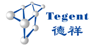
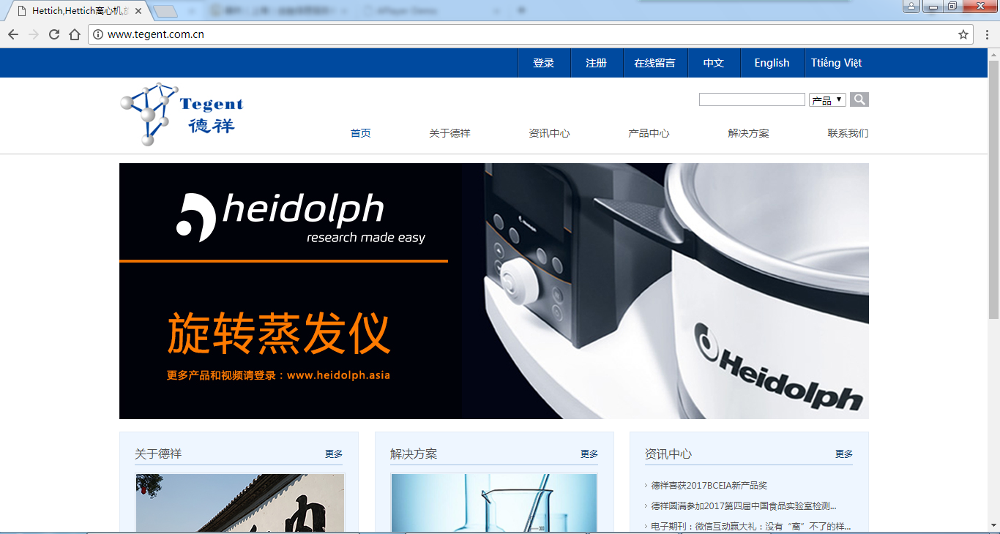
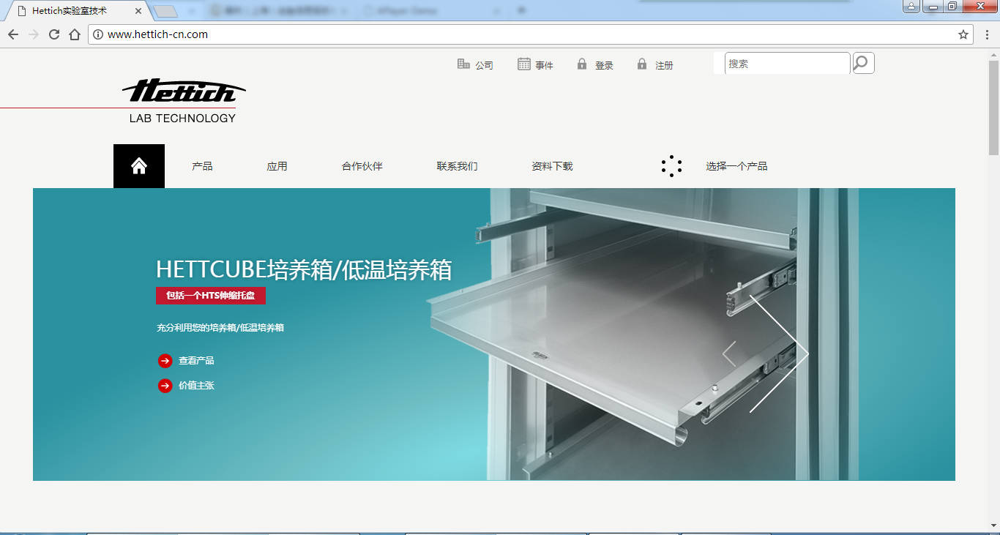

-
- Basic info. 基本信息
- 个人信息: @_@Bluesky / 男
- 真实姓名: 陶秋彪
- 毕业院校: 浙江海洋大学
- 所在城市: 上海
- 工作年限: 两年
- GitHub: https://taoresume.github.io/resume/resume/index.html
-
- Experience. 项目与工作经验
善林上海（商务）有限公司（2017.02 - 至今）
-
职位——Web前端开发工程师
-
公司官网浏览地址
公司新版官网于2017年6月份改版上线，项目周期两个多月，主要负责网站的前端开发，网站构造较为简单，仅使用滑动门SuperSlide插件,调用的API接口仅高德地图API，使用JQuery、Html、CSS3进行代码编写，由于兼任其他网站维护工作，故项目开发时间较长。
-
贷款审核系统
善林小额信贷审核系统于2016年中旬项目完结，后续主要工作为系统做改进维护工作。
-
善林内部员工商城（局域网不对外开放）源代码
善林员工积分商城系统，为激励员工参与各类活动、积极工作而制作的。
前端使用html，css，jQuery，ajax，以及原生javascript编写，后端采用asp.net编写。
上海德心贸易有限公司（2015.07 - 2016.12）
-
职位——网络推广专员
-
德祥官网德祥官网
负责运营推广公司网站，每天外链发布至相关行业论坛，新浪微博，百度文库，百度贴吧等。网站文章发布，文章都是由产品经理提供的原创文章，每周汇报百度统计后台数据。站长工具查看流量、收录等情况进行分析，建立关键词库（精准关键词、长尾关键词、短句关键词等），优化HTML代码，keywords，description，html语义化标签，寻找站长群互换友情链接，及相关推广问题交流。
 -
Hettich网站Hettich官网源代码
负责Hettich网站前端开发工作，使用html，css并结合Javascript进行项目的前端开发和页面制作。
 -
网站后台管理项目
负责各大平台发布新闻及产品信息，发布时适当进行文字排版和PS图片使展示更加美观，充分利用各大平台提供的服务进行宣传，统计分析后台数据等。
个人项目
-
- Skill. 技能清单
前端
-
HTML / CSS
能够编写语义化的 HTML，模块化的 CSS，完成较复杂的布局
熟悉 Bootstrap等CSS框架
-
JavaScript
熟悉原生 Javascript，能脱离 jQuery 等类库编码
能运用模块化、面向对象的方式编程
了解 vue.js Angular.js 框架的使用
后端
-
PHP
熟悉PHP语言，能进行常规的PHP语言编写，结合MySQL进行整站开发